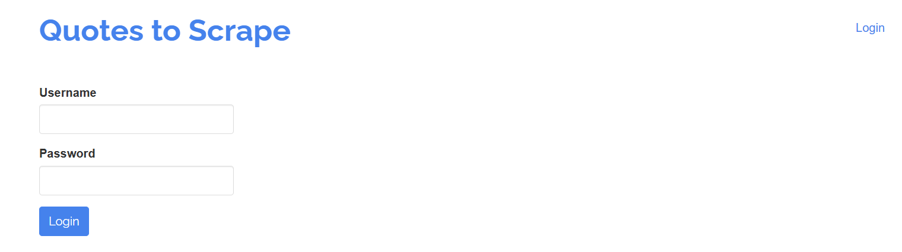

Web scraping, the automated process of extracting data from websites, is a crucial skill in today's data-driven world. Whether you are a data scientist, researcher, or simply curious about gathering information from the web, the ability to programmatically extract data opens a lot of possibilities. While traditional web scraping methods work well for static websites, the increasing prevalence of dynamic, JavaScript-heavy websites makes these tools less effective. This is where Selenium comes in, a powerful browser automation framework that mimics human interactions with a browser. In essence, Selenium is able to "see" the website the same way a human would. This guide provides a hands-on approach to using Selenium for web scraping in Python, offering step-by-step instructions and real-world examples using the Quotes to Scrape website. By the end of this guide, you'll be equipped to tackle various web scraping challenges, from extracting simple text to handling complex dynamic elements that would be impossible with traditional tools. Imagine you want to analyze product reviews on an e-commerce site that loads reviews as you scroll down; Selenium can automate this process, while other tools might struggle.
Before diving into the practical aspects of web scraping with Selenium, ensure you have a solid foundation in the following:
Selenium is an open-source framework designed for automating web browser interactions. Although frequently used for testing web applications, it has become a powerful tool for web scraping. Unlike static scraping tools, Selenium launches and controls a web browser (Chrome, Firefox, Safari, or Edge) that loads a page, executes JavaScript, and renders a complete view. This provides access to data that would be impossible to extract using traditional HTML parsing techniques. Selenium supports different browsers and programming languages such as Java, Python, C# and JavaScript.
Selenium's main advantages in web scraping come from its ability to:
First, you need to install the Selenium Python library using pip:
pip install seleniumNext, you need a WebDriver, which acts as an interface between your script and the web browser. Download the appropriate WebDriver based on the browser you intend to use. Make sure that the browser version *exactly* matches the web driver's version to avoid compatibility issues.
Place the downloaded WebDriver executable in a known directory. You will need to provide this path to your Python script.
Here is an example of how to setup and configure Selenium with ChromeDriver. Remember to adjust the path to match the location where you *saved* your WebDriver.
from selenium import webdriver
from selenium.webdriver.chrome.service import Service
from selenium.webdriver.common.by import By
# Replace with the actual path to your ChromeDriver executable
webdriver_path = '/path/to/chromedriver'
service = Service(webdriver_path)
driver = webdriver.Chrome(service=service)
# Navigate to the website
driver.get('http://quotes.toscrape.com/')
print(f'Page Title: {driver.title}') # Using an f-string for better output
driver.quit()Output:
Page Title: Quotes to ScrapeThis script will:
Service object, passing the path to your
ChromeDriver.webdriver.Chrome object, using the
service objectFor Macos / Linux users, the webdriver can be installed in a different way, refer to the official documentation for more information. You can configure the browser to run in different ways, like in headless mode or incognito mode, refer to the Selenium documentation for more details.
The driver.get() method is used to load a page and begin
the scraping process.
driver.get('http://quotes.toscrape.com/')This simple line of code instructs the Selenium controlled browser to load the page, making it ready for inspection and data extraction.
Locating the elements of interest is crucial when scraping web pages. Selenium provides multiple strategies for locating elements. Here are some of the most common methods:
driver.find_element(By.ID, 'element_id') to locate a single
element based on its unique ID. This is typically the most efficient
way, if an ID is present.driver.find_elements(By.CLASS_NAME, 'class_name') to locate
multiple elements that share the same class name. This is helpful for
extracting repeated elements that have similar styles.driver.find_elements(By.TAG_NAME, 'tag_name') to find all
elements of a particular HTML tag (e.g., div,
p, a).driver.find_element(By.LINK_TEXT, 'link_text') to find an
anchor tag by its exact link text. This is a good way to grab elements
like navigation buttons or labels.driver.find_elements(By.CSS_SELECTOR, 'css_selector') to
locate elements using CSS selectors. CSS selectors are a powerful and
flexible tool for element location, allowing you to target different
attributes and HTML structures. CSS selectors are a great way to locate
specific elements, and you should definitely learn more about them
through online resources.driver.find_elements(By.XPATH, 'xpath_expression') to find
elements with XPath expressions. XPath is more powerful in cases where
CSS selectors are insufficient for element location. XPath is very
powerful but has a higher learning curve than CSS selectors.Here’s an example of how to extract the quotes and author links from the Quotes to Scrape website:
# Locate all quote elements
quotes = driver.find_elements(By.CLASS_NAME, 'quote')
# Iterate through each quote and extract the text and author link
for quote in quotes:
try:
quote_text = quote.find_element(By.CLASS_NAME, 'text').text
author_link = quote.find_element(By.CSS_SELECTOR, 'small.author + a').get_attribute('href')
print(f'Quote: {quote_text}')
print(f'Author Link: {author_link}')
except Exception as e:
print(f"An error occurred: {e}")Sample Output:
Quote: “The world as we have created it is a process of our thinking. It cannot be changed without changing our thinking.”
Author Link: /author/Albert-Einstein
Quote: “It is our choices, Harry, that show what we truly are, far more than our abilities.”
Author Link: /author/J-K-RowlingIn this example: 1. We locate all elements with class name `quote` 2. For each quote we find the text using the `text` class, and the author link through the css selector. 3. Error handling has been added to the loop to prevent the code from stopping if it cannot find an element.
Selenium lets you simulate user interactions, which is crucial for scraping dynamic websites. These interactions include:
click(): Clicks an element (button, link, etc.)send_keys(): Enters text into an input fieldsubmit(): Submits a formclear(): Clears the content of an input fieldHere is an example of simulating a login on a website (note: the Quotes to Scrape website does not have a real login, but this is an example of how one could automate login for a real website):
driver.get('https://quotes.toscrape.com/login')
try:
login_link = driver.find_element(By.LINK_TEXT, 'Login')
login_link.click()
username_field = driver.find_element(By.ID, 'username')
password_field = driver.find_element(By.ID, 'password')
submit_button = driver.find_element(By.CSS_SELECTOR, 'button[type="submit"]')
username_field.send_keys('your_username') # Replace with your actual username
password_field.send_keys('your_password') # Replace with your actual password
submit_button.click()
# Now you are logged in, and can access the authenticated content
except Exception as e:
print(f"An error occurred: {e}")This example shows how to find elements using different locators, enter text into the fields, and click the login button. Remember to replace `your_username` and `your_password` with the valid values for the website you are using. 
Selenium allows you to capture a screenshot of the current webpage, which can be useful for debugging or for visually saving the current state of the browser.
driver.save_screenshot('quotes_homepage.png')This code saves the current page as a PNG image named `quotes_homepage.png` in the same directory as your script.
Many websites load more data as you scroll down. Selenium allows you to automate scrolling using JavaScript:
try:
driver.execute_script('window.scrollTo(0, document.body.scrollHeight);')
except Exception as e:
print(f"An error occurred when scrolling {e}")This will scroll the window to the bottom of the page, loading more content. Make sure to add a wait after the scrolling to give the browser time to load.
Dynamic content is a significant challenge for web scrapers. Selenium provides the `WebDriverWait` class, which allows you to wait for a specific condition to be met before proceeding. This will help you avoid errors due to trying to access content that is not yet fully loaded.
from selenium.webdriver.support.ui import WebDriverWait
from selenium.webdriver.support import expected_conditions as EC
try:
driver.get('http://quotes.toscrape.com/scroll') # A page that loads on scroll
wait = WebDriverWait(driver, 10) # Wait for a maximum of 10 seconds
quote = wait.until(EC.presence_of_element_located((By.CLASS_NAME, 'quote')))
print(f"First Quote: {quote.text}")
except Exception as e:
print(f"Error waiting for dynamic content: {e}")Output:
First Quote: "Life is what happens to us while we are making other plans." - Allen SaundersThis script: 1. Navigates to a page that loads content on scroll. 2. Initializes `WebDriverWait` with a timeout. 3. Uses `wait.until()` to wait until at least one element with class `quote` appears in the DOM.
Common expected conditions:
EC.presence_of_element_located: Waits for at least one
element matching the locator to be present in the DOM.EC.visibility_of_element_located: Waits until an
element is visible on the page and rendered.EC.element_to_be_clickable: Waits until the element is
visible and can be interacted with.EC.text_to_be_present_in_element: Waits until a
specific text is present in the element.CAPTCHAs are designed to stop automated bots. There is no fool proof way of bypassing CAPTCHAs. Here are some strategies:
Many websites display information across multiple pages. Selenium can automate the navigation process by clicking next page buttons, or other forms of navigation. Here is an example that uses the next button on the Quotes to Scrape site:
import time
page_num = 1
while True:
print(f'Scraping Page: {page_num}')
try:
quotes = driver.find_elements(By.CLASS_NAME, 'quote')
for quote in quotes:
quote_text = quote.find_element(By.CLASS_NAME, 'text').text
author_link = quote.find_element(By.CSS_SELECTOR, 'small.author + a').get_attribute('href')
print(f' Quote: {quote_text}')
print(f' Author Link: {author_link}')
except Exception as e:
print(f"An error occurred while scraping the quotes.\nError: {e}")
break
try:
next_button = driver.find_element(By.CSS_SELECTOR, 'li.next a')
next_button.click()
page_num += 1
time.sleep(2) # Wait for 2 seconds before scraping the next page
except Exception as e:
print(f"No next page found, finished scraping.\nError: {e}")
breakThis will iterate over every page of the website, extracting the quotes and authors. The loop will finish when there is no next button to click. A 2 second delay has been added to be more respectful to the server. Output Example:
Scraping Page: 1
Quote: “The world as we have created it is a process of our thinking. It cannot be changed without changing our thinking.”
Author Link: /author/Albert-Einstein
Quote: “It is our choices, Harry, that show what we truly are, far more than our abilities.”
Author Link: /author/J-K-Rowling
...
Scraping Page: 2
Quote: “The greatest glory in living lies not in never falling, but in rising every time we fall.”
Author Link: /author/Nelson-Mandela
Quote: “You only live once, but if you do it right, once is enough.”
Author Link: /author/Mae-West
...
No next page found, finished scraping.
Error: Message: no such element: Unable to locate element: {"method":"css selector","selector":"li.next a"}Always prioritize ethical behavior while web scraping:
Selenium is an essential tool for modern web scraping, particularly when dealing with dynamic content and user interactions. Combining Selenium with static parsing tools like BeautifulSoup, where Selenium is used for browser interaction and BeautifulSoup for parsing HTML, will greatly enhance your web scraping capabilities. By mastering Selenium, you can adapt to the evolving landscape of web technologies.
Mohamed Khaled Elsafty, 2024
{kind=link}